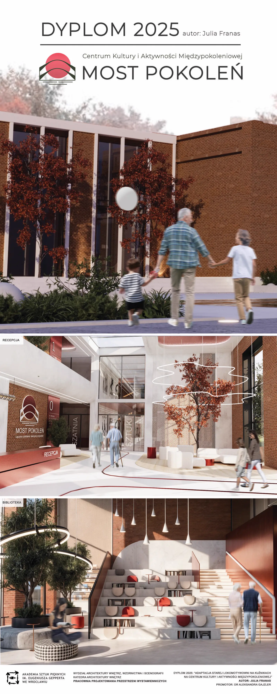
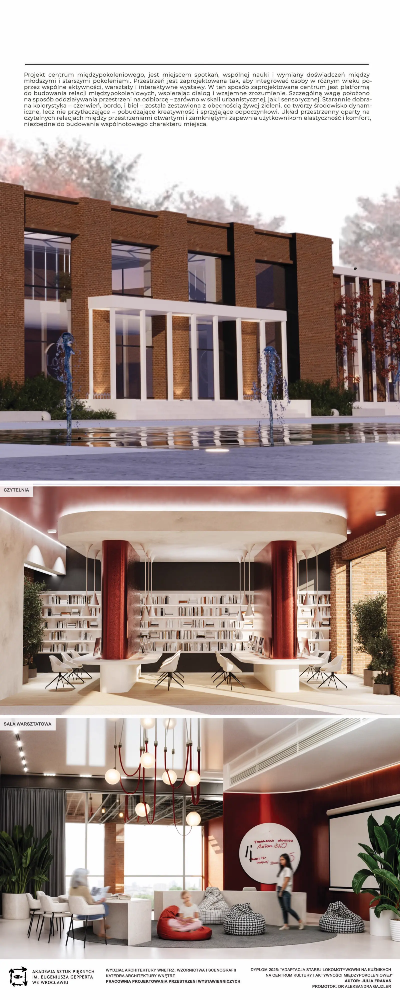
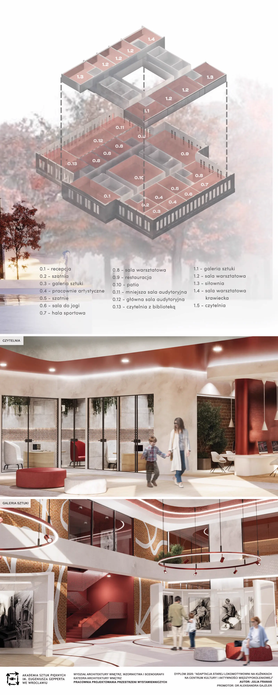
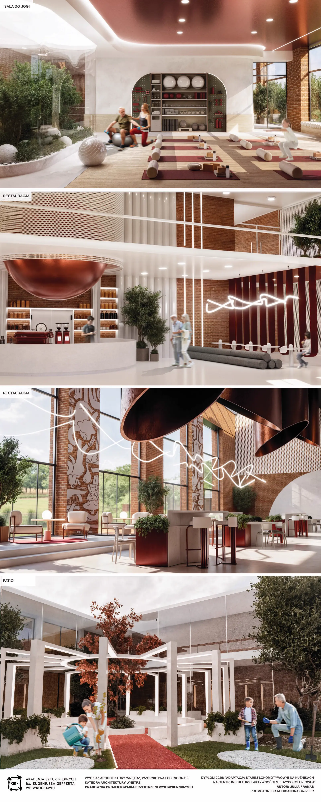
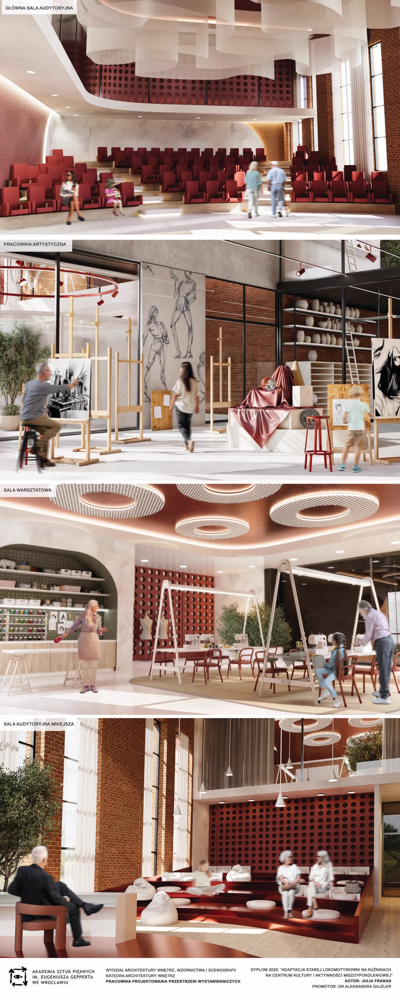

Franas old railway roundhouse
ASP Wroclaw
Diplomový projekt adaptace staré lokomotivní rotundy v Kuźnikách ve Vratislavi na centrum kultury a mezigenerační aktivity. Návrh propojuje ochranu industriálního dědictví se sociální integrací, vzděláváním a komunitním životem.